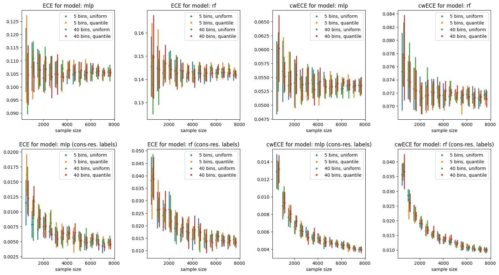

[1]:
%load_ext autoreload
%autoreload 2
!pip install tinydb
Collecting tinydb
Downloading tinydb-4.7.0-py3-none-any.whl (24 kB)
Installing collected packages: tinydb
Successfully installed tinydb-4.7.0
[2]:
from dataclasses import dataclass
from itertools import product
from typing import List
from typing import Optional
import matplotlib.pyplot as plt
from matplotlib.axis import Axis
import numpy as np
from sklearn import datasets
from sklearn.ensemble import RandomForestClassifier
from sklearn.metrics import accuracy_score
from sklearn.model_selection import train_test_split
from sklearn.neural_network import MLPClassifier
from tinydb import TinyDB, Query
from tinydb.storages import MemoryStorage
from tinydb.table import Table
from kyle.evaluation.reliabilities import (
expected_calibration_error,
class_wise_expected_calibration_error,
)
Case 1: RF and MLP on Synthetic Data
Here the sample size is increased by simply including more synthetic data
[3]:
n_samples = 15000
n_classes = 4
[4]:
n_features = 20
n_informative = 7
n_redundant = 10
X, y = datasets.make_classification(
n_samples=n_samples,
n_features=n_features,
n_informative=n_informative,
n_redundant=n_redundant,
n_classes=n_classes,
random_state=42,
)
X_train, X_test, y_train, y_test = train_test_split(
X, y, test_size=0.8, random_state=42
)
print(f"Training set size: {len(X_train)}, calibration set size: {len(X_test)}")
Training set size: 3000, calibration set size: 12000
[5]:
MODELS = {
"mlp": MLPClassifier(hidden_layer_sizes=(30, 30, 20), max_iter=500),
"rf": RandomForestClassifier(),
}
predicted_confs = {}
for model_name, model in MODELS.items():
print(f"Fitting {model_name} on {len(X_train)} samples.")
model.fit(X_train, y_train)
confs = model.predict_proba(X_test)
predicted_confs[model_name] = confs
y_pred = confs.argmax(axis=1)
model_accuracy = accuracy_score(y_test, y_pred)
print(f"Test accuracy of {model_name}: {model_accuracy}")
Fitting mlp on 3000 samples.
Test accuracy of mlp: 0.86575
Fitting rf on 3000 samples.
Test accuracy of rf: 0.8706666666666667
[6]:
# Consistency resampling to get calibrated classifiers
calibrated_y_true = {
"mlp": np.zeros(len(X_test)),
"rf": np.zeros(len(X_test)),
}
for model, confs in predicted_confs.items():
for i, conf in enumerate(confs):
calibrated_y_true[model][i] = np.random.choice(n_classes, p=conf)
[7]:
METRICS = {
"ECE": expected_calibration_error,
"cwECE": class_wise_expected_calibration_error,
}
def get_scores(
evaluation_set_size: int,
num_samples: int,
model: str,
metric: str,
consistency_resampling=False,
):
results = []
for _ in range(num_samples):
sample_indices = np.random.choice(
len(X_test), evaluation_set_size, replace=False
)
confs = predicted_confs[model][sample_indices]
if not consistency_resampling:
y_true = y_test[sample_indices]
else:
y_true = calibrated_y_true[model][sample_indices]
score = METRICS[metric](y_true, confs)
results.append(score)
return np.array(results)
[8]:
@dataclass
class MetricEvaluation:
model: str
metric: str
n_bins: int
strategy: int
scores: Optional[np.ndarray] = None
set_size: Optional[int] = None
num_samples: Optional[int] = None
consistency_resampling: bool = False
def perform_evaluation(
self, set_size: int, num_samples: int, consistency_resampling=False
):
self.set_size = set_size
self.num_samples = num_samples
self.consistency_resampling = consistency_resampling
self.scores = get_scores(
set_size,
num_samples,
self.model,
self.metric,
consistency_resampling=consistency_resampling,
)
def mean(self):
self._assert_nonempty()
return self.scores.mean()
def std(self):
self._assert_nonempty()
return self.scores.std()
def _assert_nonempty(self):
if self.scores is None:
raise RuntimeError(
f"You must run `perform_evaluation` before computing statistics: {self}"
)
[9]:
# collect all evaluations to an in-memory database
n_bins_options = [5, 40]
binning_strategy_options = ["uniform", "quantile"]
def save_evaluations_to_db(
set_sizes: List[int], num_samples: int, db: TinyDB, consistency_resampling=False
):
for set_size, model, metric, n_bins, strategy in product(
set_sizes, MODELS, METRICS, n_bins_options, binning_strategy_options
):
metric_evaluation = MetricEvaluation(model, metric, n_bins, strategy)
metric_evaluation.perform_evaluation(
set_size, num_samples, consistency_resampling=consistency_resampling
)
db.insert(metric_evaluation.__dict__)
[10]:
# customization of tinydb
class EvaluationsTable(Table):
def search(self, cond: Query) -> List[MetricEvaluation]:
results = super().search(cond)
return [MetricEvaluation(**eval_dict) for eval_dict in results]
TinyDB.table_class = EvaluationsTable
TinyDB.default_storage_class = MemoryStorage
[11]:
set_sizes = range(500, 8000, 500)
num_samples = 10
db = TinyDB()
evalQ = Query()
[12]:
save_evaluations_to_db(
set_sizes=set_sizes,
num_samples=num_samples,
db=db,
consistency_resampling=False,
)
save_evaluations_to_db(
set_sizes=set_sizes,
num_samples=num_samples,
db=db,
consistency_resampling=True,
)
[13]:
def get_query(
model: str,
n_bins: int = None,
strategy: str = None,
metric: str = None,
consistency_resampling=False,
):
q = evalQ.model == model
q = q & (evalQ.consistency_resampling == consistency_resampling)
if n_bins:
q = q & (evalQ.n_bins == n_bins)
if strategy:
q = q & (evalQ.strategy == strategy)
if metric:
q = q & (evalQ.metric == metric)
return q
def get_evaluations(
model: str,
n_bins: int = None,
strategy: str = None,
metric: str = None,
consistency_resampling=False,
) -> List[MetricEvaluation]:
evaluations = db.search(
get_query(
model,
n_bins,
strategy,
metric,
consistency_resampling=consistency_resampling,
)
)
return sorted(evaluations, key=lambda ev: ev.set_size)
[14]:
def plot_convergence(
model: str,
n_bins: int,
strategy: str,
metric: str,
consistency_resampling=False,
delta_x=0,
color=0,
ax: Axis = None,
):
selected_evaluations = get_evaluations(
model, n_bins, strategy, metric, consistency_resampling
)
selected_set_sizes = np.zeros(len(selected_evaluations))
means = np.zeros(len(selected_evaluations))
stds = np.zeros(len(selected_evaluations))
for i, ev in enumerate(selected_evaluations):
selected_set_sizes[i] = ev.set_size
means[i] = ev.mean()
stds[i] = ev.std()
if isinstance(color, int):
color = f"C{color}"
x_values = selected_set_sizes + delta_x
ymin = means - stds
ymax = means + stds
if ax is None:
ax = plt.gca()
title = f"{metric} for model: {model}"
if consistency_resampling:
title += f" (cons-res. labels)"
ax.set_title(title)
ax.set_xlabel("sample size")
ax.plot(x_values, means, ".", color=color, label=f"{n_bins} bins, {strategy}")
ax.vlines(x_values, ymin=ymin, ymax=ymax, color=color, linewidth=2)
return ax
def plot_all_convergences(
model: str, metric: str, ax: Axis = None, delta_x=60, consistency_resampling=False
):
for i, (n_bins, strategy) in enumerate(
product(n_bins_options, binning_strategy_options)
):
ax = plot_convergence(
model,
n_bins,
strategy,
metric,
delta_x=i * delta_x,
color=i,
ax=ax,
consistency_resampling=consistency_resampling,
)
ax.legend()
return ax
[15]:
def to_win_path(path: str):
return path.replace("/c/", "C:\\").replace("/", "\\")
fig, axs = plt.subplots(2, 4, figsize=(16, 9))
plot_all_convergences("mlp", "ECE", ax=axs[0, 0])
plot_all_convergences("rf", "ECE", ax=axs[0, 1])
plot_all_convergences("mlp", "cwECE", ax=axs[0, 2])
plot_all_convergences("rf", "cwECE", ax=axs[0, 3])
plot_all_convergences("mlp", "ECE", consistency_resampling=True, ax=axs[1, 0])
plot_all_convergences("rf", "ECE", consistency_resampling=True, ax=axs[1, 1])
plot_all_convergences("mlp", "cwECE", consistency_resampling=True, ax=axs[1, 2])
plot_all_convergences("rf", "cwECE", consistency_resampling=True, ax=axs[1, 3])
fig.tight_layout(pad=2.0)
plt.show()

[ ]: